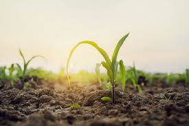
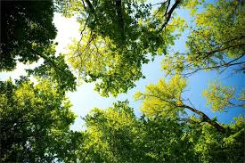
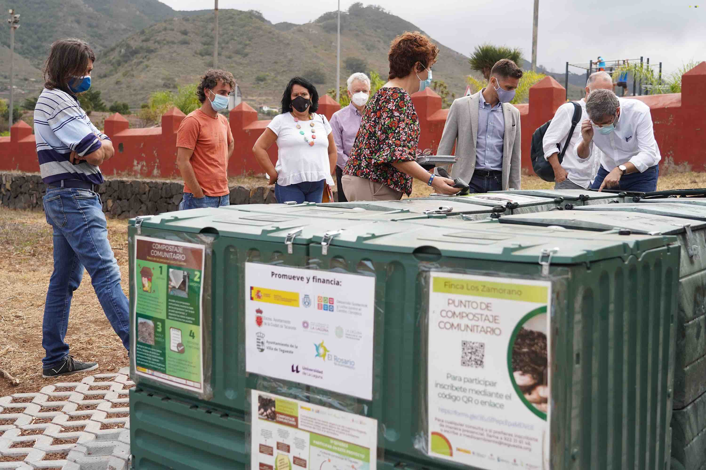
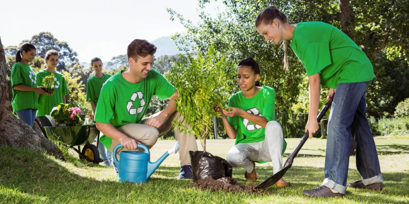

Impacto Ambiental
En ECOMPOST, trabajamos cada día para reducir el impacto ambiental y promover la sostenibilidad mediante el reciclaje de residuos orgánicos y el uso de compost de calidad.
Nuestros Logros
20,000 toneladas de residuos orgánicos reciclados.

15,000 hectáreas de suelo mejorado con compost.

5,000 árboles plantados en colaboración con comunidades.
Proyectos Destacados

Proyecto Comunitario: Transformación de residuos en fertilizantes para comunidades agrícolas.

Reforestación: Plantación de árboles en áreas deforestadas utilizando compost como fertilizante natural.
Crecimiento Anual
El gráfico muestra el crecimiento continuo en la cantidad de residuos reciclados y el impacto ambiental logrado desde 2018.